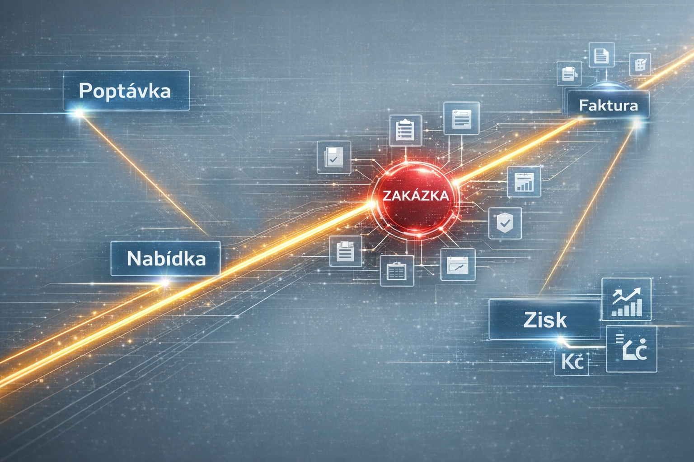

Zkušenost z reálné firmy tvořící komplexní produkty z oblasti automotive a zakázkového strojírenství.
Ve firmě z oblasti automotive a zakázkového strojírenství jsme řešili klasický problém. Všechno trvalo dlouho a panoval zmatek.
Nešlo jen o samotnou evidenci. Největší problém byla skutečná provázanost informací. Nikdo si nebyl jistý v odpovědích na základní otázky:
Bez jasných odpovědí na tyto otázky nebylo možné firmu efektivně řídit.

Zavedli jsme systém ThreeS, který spojuje vše do jednoho přehledného prostředí. Dokumenty se vytvářejí automaticky a vážou se hned po svém vzniku přímo na danou zakázku.